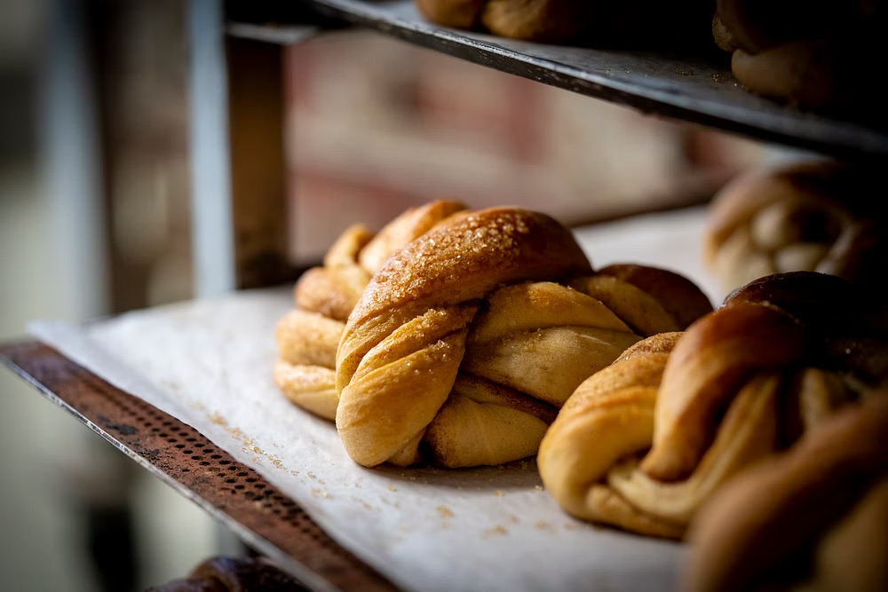
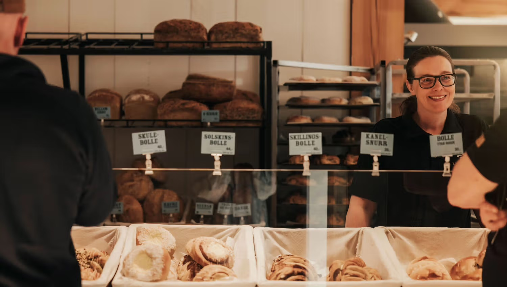
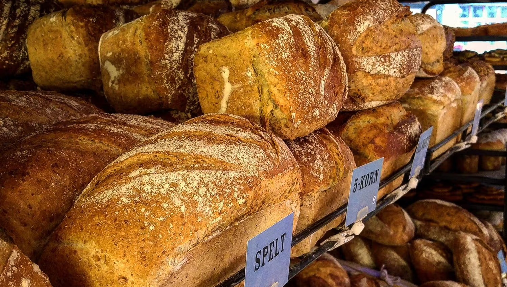
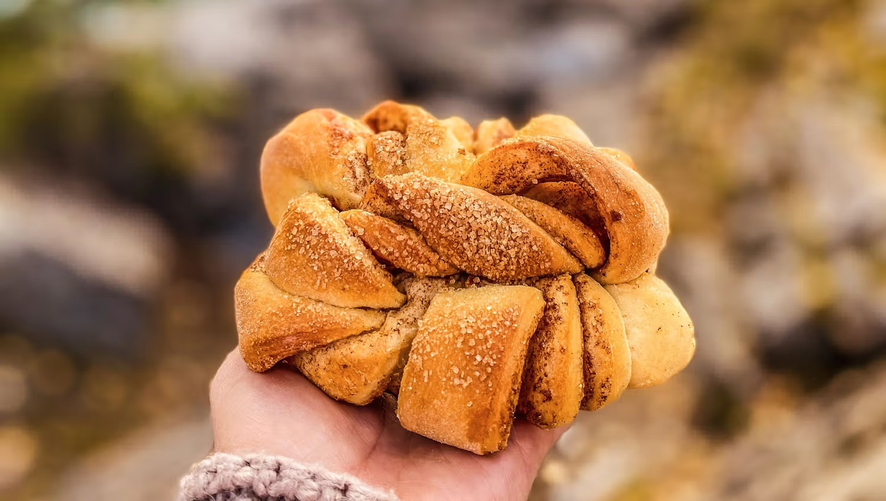
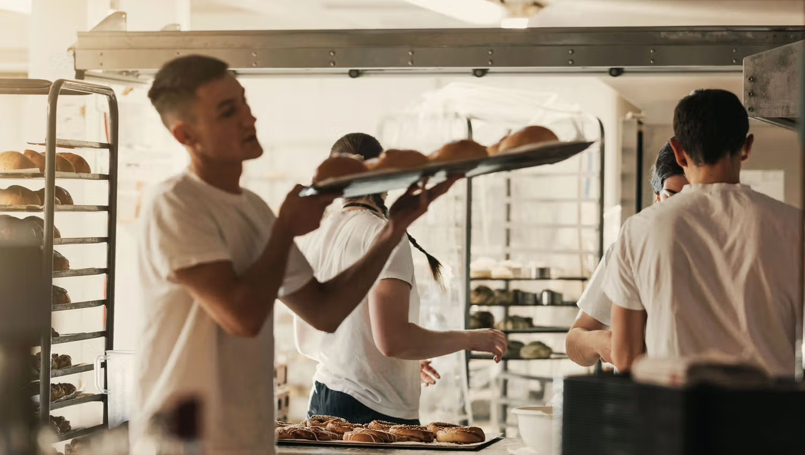

Håndverksglede hver dag
Hos Knuteverket starter dagen tidlig. Vi baker med gode råvarer, ekte gjær og tradisjoner som sitter i hendene. Velg det som smaker best.
Se oppskriftenVår bakst
Vi baker med god tid, varme ovner og råvarer som passer til norsk baketradisjon.

Skoleboller, solskinsboller, skillingsboller – vi har bolle til enhver smak. Bakt ferske hver morgen og klare til å glede deg midt på dagen.

Fra luftige boller til klassiske kanelsnurrer – vår gjærbakst er bakt med ekte smør og tålmodighet. Perfekt til kaffekruset, uansett tid på dagen.

Spelt, 5-korn, surdeig – brødene våre bakes etter oppskrifter som tåler tidens tann. Solid skorpe, myk kjerne og ærlig smak du kjenner igjen.

Den vridde, gyldne knuteformen er ikke bare vakker – den gir mer overflate for kanelfyllet og en knasende kant som gjør hver bit til en opplevelse.

Lokale tradisjoner
Hos Knuteverket starter dagen lenge før du er oppe. Bakerne våre går på jobb i mørket for at du skal finne ferskt brød og nybakt bakst når du trenger det.
Om oss og bakeriet